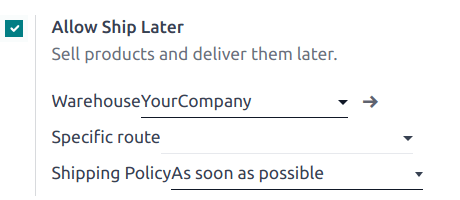

Ship later¶
The Ship Later feature allows you to sell products and schedule delivery at a later date. It is useful, for example, when a product is out of stock or so voluminous that it requires to be shipped, or if, for any reason, the customer needs their order to be shipped later, etc.
Configuration¶
Go to the POS settings, scroll down to the Inventory section, and enable Allow Ship Later.
Once activated, you can:
Choose the location from where the products are shipped by selecting a Warehouse.
Define a Specific route, or leave this field empty to use the default route.
Define the Shipping Policy; select As soon as possible if the products can be delivered separately or When all products are ready to ship all the products at once.
Practical application¶
Open a session and make a sale.
On the payment screen, set a customer and select Ship Later.
On the popup window, set a shipping date and click Confirm to proceed to payment.
The system instantly creates a delivery order from the warehouse to the shipping address.
Note
The selected customer must have referenced an address in the system for products to be shipped.